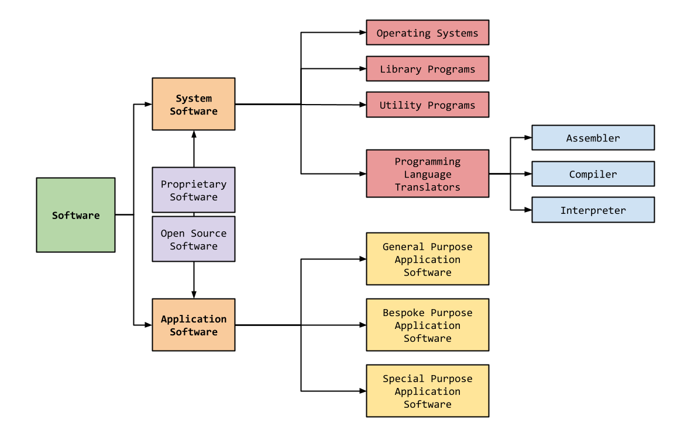

mrahmedcomputing
KS3, GCSE, A-Level Computing Resources
Lesson 2. Software
Lesson Objective
- Understand what software is.
- Explain the differences between system and application software.
- Should also be able to list and describe programs from different software categories.
Lesson Resources
Lesson Quiz
Lesson Presentation
Select the presentation, the press "f11" to enter full screen mode
Lesson Notes
What is Software?
Software refers to a collection of programs and data that instruct a computer on how to perform specific tasks. The image below show software broken down into various categories.
Application Software
Application software, also known as app or software application, refers to a category of computer programs designed to perform specific tasks for end-users.
Application software enables users to create, edit, design, browse, communicate, and play with various applications. It can manipulate text, numbers, audio, graphics, or a combination of these elements. Examples include word processors, media players, and accounting software.
General Purpose
General purpose software is versatile and can be used for a variety of tasks. It is not limited to one specific function.
Examples:
- Word Processors: These allow users to create documents, write novels, design restaurant menus, or even make posters.
- Spreadsheet Software: Used for calculations, data analysis, and organizing information.
- Presentation Software: Enables the creation of slideshows and visual presentations.
Bespoke
Bespoke software is tailor-made for a specific user or organization. It is customized to meet precise needs.
Advantages:
- Precision - Meets specific requirements.
Disadvantages:
- Cost - Development expenses can be high.
- Time - This software can take a long time to create.
Examples:
- Factory Automation: Software to run robots in car manufacturing, specifically designed for a unique factory.
- Military Operations: Software for missile systems, UAVs, and specialized military equipment.
- Financial Institutions: Custom software for banks, hospitals, and medical equipment.
Special Purpose
Special purpose software is designed for a specific task or function. It serves a singular purpose.
Examples:
- Camera Applications on Phones: These apps allow users to take and share pictures.
- Chess Games: Designed solely for playing chess.
- Web Browsers, Calculators, and Media Players.
System Software
System software performs the tasks needed to operate the hardware.
System software refers to the low-level software that manages and controls a computer's hardware and provides basic services to higher-level software. It serves as the interface between the hardware and the end users, allowing users to interact with the hardware and use various applications and programs.
Here are examples of System Software:
- Operating Systems (OS): These are foundational frameworks for all other software and applications to run on a computer. Examples include Windows, macOS, and Linux.
- Device Drivers: These enable communication between the operating system and hardware devices like printers, scanners, and graphics cards.
- Firmware: Pre-installed low-level software that controls a device's basic functions.
- Utility Software: Tools for system maintenance and optimization.
- Boot Loaders: Software that initializes the OS during startup.
Operating Systems
Operating systems act as interface between user and hardware. The operating system hides the complexity of the hardware from the user. Manages hardware and runs software and also:
- Communicates with peripheral devices (input/output) using device drivers (software that translated OS and device language).
- Provides a platform for application software to run on.
- Controls memory management.
- Organises the CPU and its tasks.
- Manages security and user accounts.
- Provides a interface for the users. There are 2 types: Command Line Interface (CLI), an interface that responds to text commands, and Graphical User Interface (GUI), an interface that provides icons, menus and other graphics the navigate though the system.
Library Programs
A library in computing refers to a collection of resources used during software development to implement computer programs. These resources can include:
- Configuration data
- Documentation
- Help Data
- Message Templates
- Source code or pre-compiled functions and classes
- Values or type specifications
Open Source Software
Open source software is computer software whose source code is available openly on the internet. Programmers can modify it to add new features and capabilities without any cost.
- Free of cost: Users can obtain it without paying.
- Source code availability: Allows users to study how the software works, modify it, and improve it.
- No restrictions on redistribution: Users can freely share it.
Examples:
- Linux Ubuntu
- GNU Image Manipulation Program
- Mozilla Firefox
Proprietary Software
Proprietary software is copyrighted and its source code is not publicly available. Only the company that created it can modify and distribute it. They are the legal owners of the software.
- Restricted access: Users need an authenticated license to use it.
- Controlled by a closed team: Managed by the company that developed it.
- Restrictions: Imposes limits on installations, sharing, and features.
Examples:
- Microsoft Office
- iOS
- Adobe Photoshop